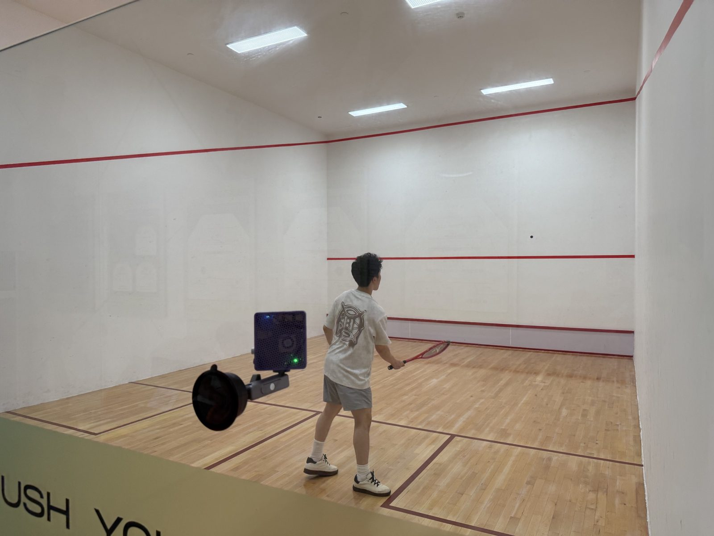
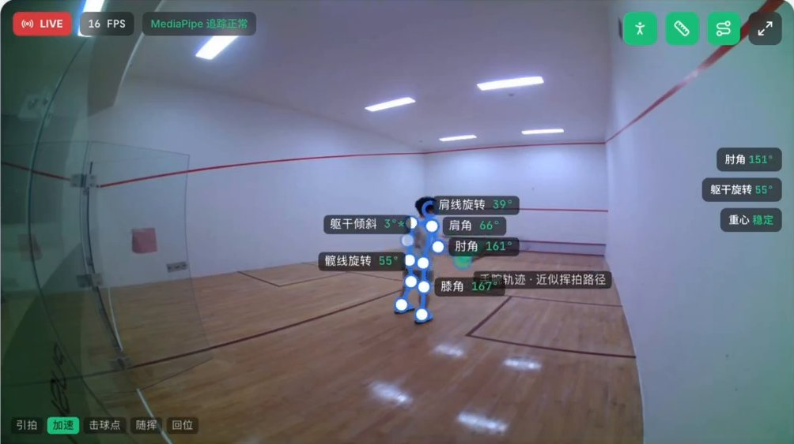
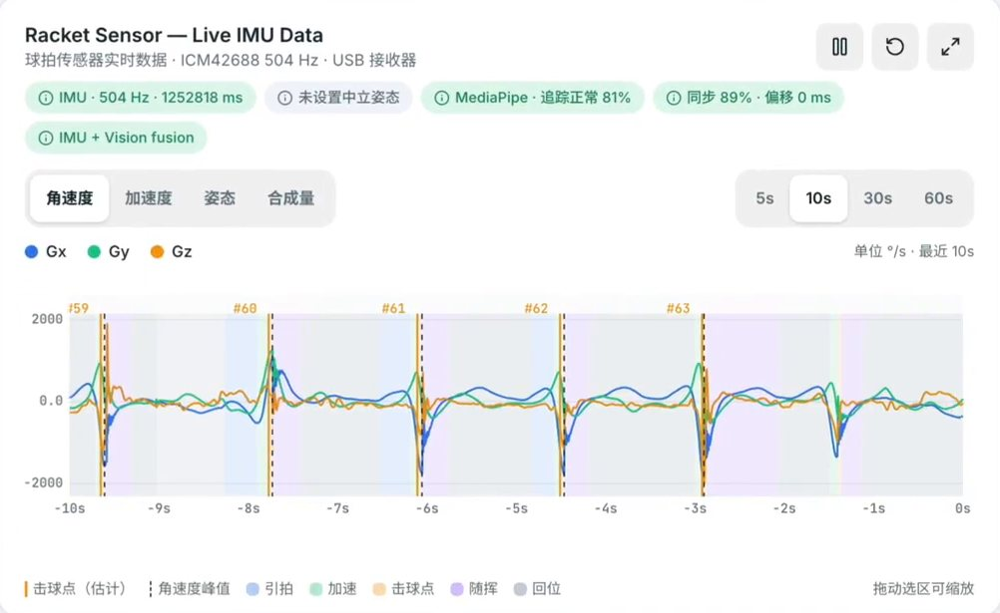
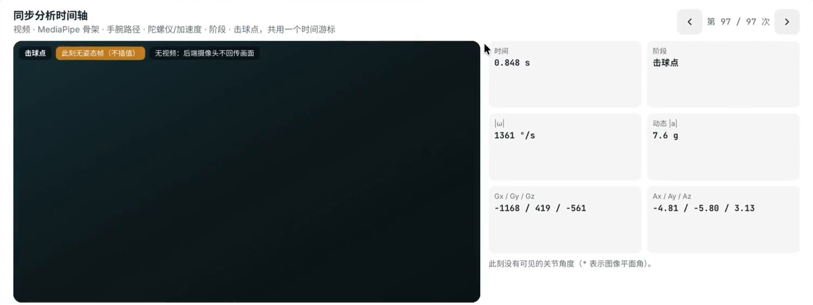
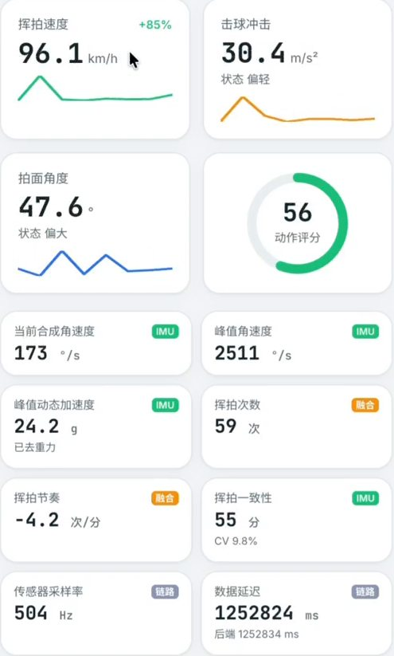
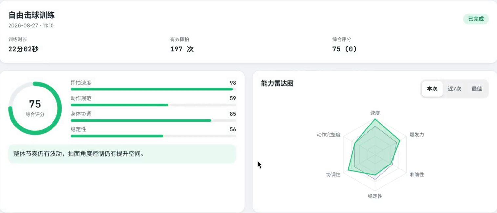
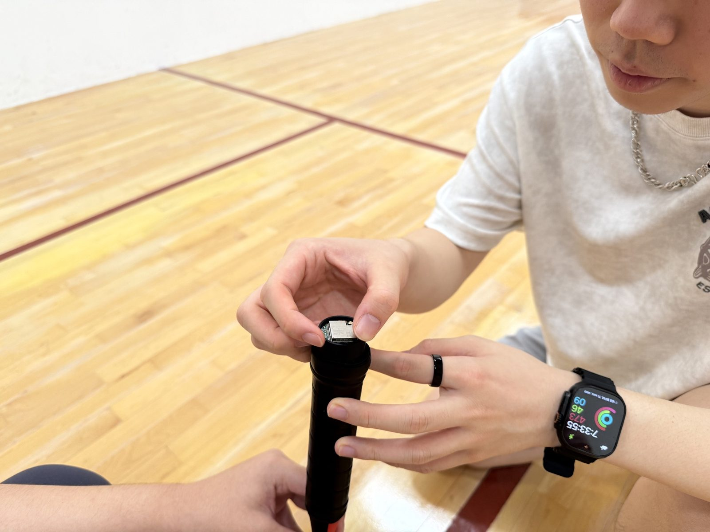
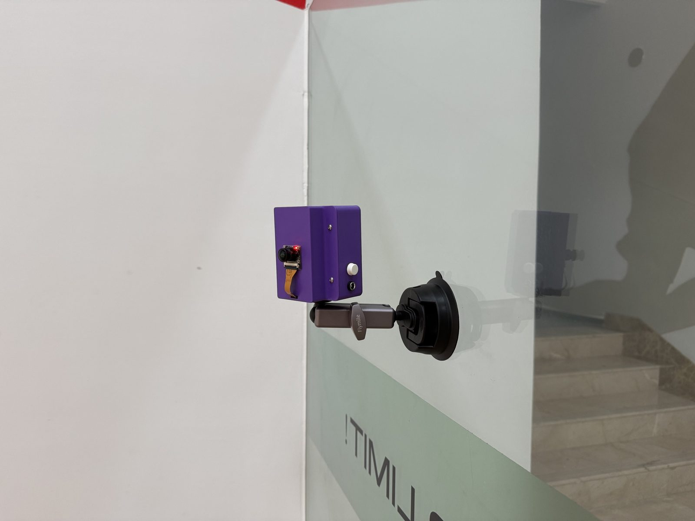
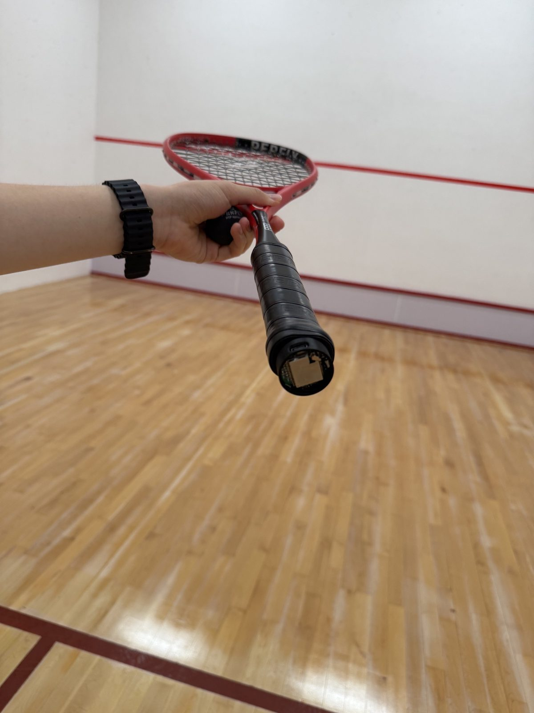

球拍传感器
握柄末端的一个短圆柱里装着一块 ESP32-S3 微控制器板和一颗 ICM42688 六轴惯性测量单元（IMU，即三轴加速度计加三轴陀螺仪）。它每秒 500 次测量加速度和转动速率（这是配置值；录像那次训练里接收端实际计得约 504 Hz），通过 ESP-NOW（一种基于 Wi-Fi 的短距离协议）发给电脑上的 USB 接收器。
直接测量：加速度 · 转动速率SquashSense 是我做的一个原型，目的是同时从两个角度看一次壁球挥拍：球拍握柄末端的一枚小型运动传感器记录球拍移动和转动的速度；场边一台小电脑上的摄像头追踪身体并估算关节角度。软件把两路数据放到同一条时间线上，训练结束后，你可以对着数字和画面一起回看一次挥拍，而不只是依靠自己或教练的记忆。

这段两分钟的视频是训练界面的录屏，来自 2026 年 8 月 27 日的一次自由击球训练（22 分钟，软件识别出 197 次挥拍，只有我一个人在打）。界面是中文的；下面的分步说明解释屏幕上有什么，图例翻译各个标签。录像里的数值来自这一版原型，没有和任何参考测量方法比对过。
视频暂时无法播放。请检查网络后重试。
下面三张图都截自同一段录像，相隔几秒。视频播不了也能看懂：先看动作，再看球拍信号，最后看两者在同一条时间线上的对应关系。

摄像头画面上画着 MediaPipe 识别出的身体骨架，此时处于“加速”阶段。标签里的角度是软件根据 33 个追踪点算出来的估计值，来自单个摄像头的二维画面；界面自己标注了带 * 的角度是图像平面角。

这是球拍传感器的实时角速度（单位 °/s，三个轴）。每次挥拍有编号（#59–#63），底色按阶段分段；橙色竖线是软件估计的击球瞬间，虚线是角速度峰值。能直接读出来的东西：这个练习里大约每 1.5 秒一次挥拍，蓝色轴的负向峰值接近 −2000 °/s，引拍和随挥各占了多长时间。

同步分析时间轴把视频、骨架、手腕路径、陀螺仪/加速度、阶段和击球点放在一个时间游标上。图中停在第 97 次挥拍的击球点：挥拍开始后 0.848 秒，角速度模长 1361 °/s，去重力后的加速度 7.6 g，以及六个轴的原始读数。视频区域是黑的：这次训练摄像头跑在场边电脑上，不把画面回传给浏览器里的时间轴；而且软件在没有姿态帧的时刻不做插值（“此刻无姿态帧（不插值）”），宁可空着也不编造。
球员或教练可以看什么：球拍峰值速度出现在身体转动峰值之前还是之后（这是我设计的时序检查）、重复挥拍之间峰值角速度稳不稳定、随挥持续了多久。至于这些该不该改，是教练的判断；原型本身不能证明哪种动作更好。
每张卡片右上角的标签说明来源：IMU 来自球拍传感器，融合 来自传感器与摄像头的组合，链路 是连接状态。下表说明每个数值怎么得到、现在处于什么状态。

| 卡片 | 怎么得到 | 状态 |
|---|---|---|
| 挥拍速度 km/h | 软件由传感器的角速度换算得到；换算方法和它的假设没有在本页记录 | 未验证。录像里出现过 261.7 km/h（+579%），对球拍来说不合理 |
| 击球冲击 m/s² | 判定击球瞬间附近的加速度峰值（传感器） | 未验证 |
| 拍面角度 ° | 传感器相对“中立姿态”的朝向估计；这次训练没有记录中立姿态 | 不是真实拍面角度；传感器单独估计的朝向会随时间漂移 |
| 动作评分 | 软件把若干子项合成的分数 | 实验性，没有验证过它与动作质量的关系 |
| 当前 / 峰值角速度 °/s · IMU | 陀螺仪三轴合成的模长，是传感器直接量 | 已演示的测量量；精度没有和参考仪器比对 |
| 峰值动态加速度 g · IMU | 加速度计读数去掉重力分量后的峰值 | 已演示；未验证 |
| 挥拍次数 融合 | 软件挥拍检测器计数：持续加速 + 接近峰值速度时的冲击 | 在真实挥拍上运行过；没有和人工计数比对。同一屏上的“已识别挥拍”和这张卡片数字不同，说明两个计数器口径不一致 |
| 挥拍节奏 次/分 · 融合 | 挥拍频率的变化 | 录像里一直是负数（−3.0 到 −6.4），所以显示的不是简单的频率；按未验证处理 |
| 挥拍一致性 分 · CV · IMU | 由多次挥拍峰值速度的变异系数（CV）换算的分数 | 实验性；训练刚开始挥拍少时读数为 0、CV 174% |
| 传感器采样率 Hz · 链路 | 接收端软件实际计数 | 配置 500 Hz，实测约 504 Hz |
| 数据延迟 ms · 链路 | 传感器时间戳与电脑时钟的差值 | 显示的约 1,252,800 ms 是两个时钟基准的偏移，不是真实延迟；这一版界面没有把它扣掉 |
| AI 实时反馈 | 软件按阈值规则从上面的数值生成的短句，例如“拍面角度 111.9° 偏大，注意固定手腕” | 未验证的建议，没有和教练判断比对过 |

整套系统跑在局域网里：传感器通过无线把数据发给插在场边电脑上的接收器，摄像头接在同一台电脑上，训练界面是一个网页，用同一网络里的笔记本电脑打开。先说清楚每个部分测什么、算什么，再说组件名称。
握柄末端的一个短圆柱里装着一块 ESP32-S3 微控制器板和一颗 ICM42688 六轴惯性测量单元（IMU，即三轴加速度计加三轴陀螺仪）。它每秒 500 次测量加速度和转动速率（这是配置值；录像那次训练里接收端实际计得约 504 Hz），通过 ESP-NOW（一种基于 Wi-Fi 的短距离协议）发给电脑上的 USB 接收器。
直接测量：加速度 · 转动速率一个接在场边电脑上的摄像头。Google 的 MediaPipe Pose 模型在每一帧里找出 33 个身体关键点；SquashSense 自己的代码再把这些点变成关节角度标签、手腕路径和阶段标签。录像里摄像头的处理速度是每秒 14–16 帧。
关键点：MediaPipe（Google）· 角度与阶段：SquashSense一块 Radxa ROCK 5C 单板电脑，装在紫色外壳里，摄像头固定在外壳正面，整体用吸盘吸在球场玻璃上。它运行姿态模型、接收传感器数据流、检测挥拍、对齐两路时钟，并提供网页界面。
检测 · 对齐 · 提供界面软件找的是球拍的持续加速，而不是固定的速度阈值（早期版本用固定阈值，漏掉了慢而紧凑的挥拍）。当加速度计上出现冲击、同时球拍仍接近峰值速度时，判定为击球。阶段（引拍、加速、击球点、随挥、回位）是事后根据球拍改变方向的时刻划分的。
传感器、电脑和浏览器各有自己的时钟，无线数据还会晚到或丢包。软件用观察到的最快一次送达来对齐时钟，随着漂移一点点修正偏移量，并把剩余的不确定度显示在界面上，而不是藏起来。
以上两段是我在项目介绍视频里的描述。本页没有独立核对应用程序和固件代码，这些说明应视为作者陈述，而不是经过第三方验证的实现细节。
左边是安装位置的示意动画（外形不按比例），右边是实物照片和三步安装流程。

实物原型SquashSense 是一个能跑起来的原型，不是经过验证的测量系统。这一节把“演示成功”和“测量有效”分开说。
先在模拟数据上开发，之后在球场上用真实传感器数据流做过少量非正式测试。完整记录下来的只有一次：2026 年 8 月 27 日，自由击球，22 分钟，一名球员（我自己），软件识别出 197 次挥拍。测试没有记日志，所以这里不报场次。
没有。没有测速雷达、动作捕捉系统，也没有人工标注过的视频，所以任何指标都没有精度数字。唯一有独立核对的量是采样率：配置 500 Hz，接收端实际计得约 504 Hz。
按我的描述：用观察到的最快送达对齐时钟，随漂移逐步修正，剩余不确定度显示在界面上。录像里同步状态显示“同步 89% · 偏移 0 ms”，同步时间轴把陀螺仪、加速度、阶段和击球点放在一个游标下。视频帧与传感器峰值之间的实际时间误差：没有测量过。
整条链路能在球场上实时跑通：传感器 → 无线 → 电脑 → 浏览器曲线（约 500 Hz）；摄像头 → 关键点 → 角度标签；在真实挥拍上完成检测与阶段划分；训练结束生成报告。
任何一个数值是准确的；阶段划分的位置是对的；评分和反馈短句对教学有意义；用了这个系统会改变任何人的打法。这些都还没有验证。
录制并逐拍标注真实训练（我自己和队友），在真实数据而不是模拟器上调整检测与评分；校准传感器安装方向，把正手和反手分开；加入对球拍和球的视频追踪，得到真实的拍头轨迹和触球点，再和传感器估计比对；最后做一个几周的小规模对照，比较用和不用这个界面的球员。这些都还没有开始。
下面的照片按时间顺序排列，每张说明它证明了什么；之后是两次有记录的改动，以及我负责的部分和借用的部分。

2026 年 8 月，在工作台上为场边单元接线、装入紫色外壳。摄像头和传感器的 USB 接收器后来都接在这台电脑上。

传感器固定在手握位置之下，握法不变。一名队友帮忙做球场测试。它对球拍平衡的影响没有测量过。

只有一个摄像头，位置要能看到整个人。从这个位置，录像那次软件报告的处理速度是每秒 14–16 帧，追踪置信度 81–82%。

用笔记本电脑通过局域网打开界面，确认传感器数据在到达、摄像头在追踪，然后才开始训练。
这两段来自我在项目介绍视频里的叙述，按“问题 → 改动 → 原因 → 下一次测试 → 未解决”整理。
这个项目不是一个人从零做出来的。下面按“我做的 / 用现成的 / 得到的帮助”分开。
只写目前知道的。没有测过的量（重量、尺寸、续航、安装耗时）在这里直接说明没有测过，不给估计值。

这个网站的源码是公开的；项目概览把本页的要点、已验证与未验证的事项整理成一页。应用程序和固件代码目前还没有公开。